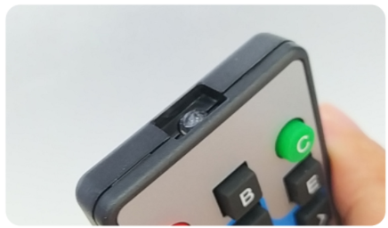
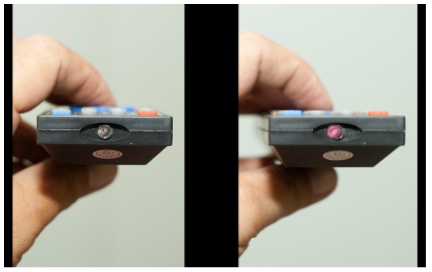
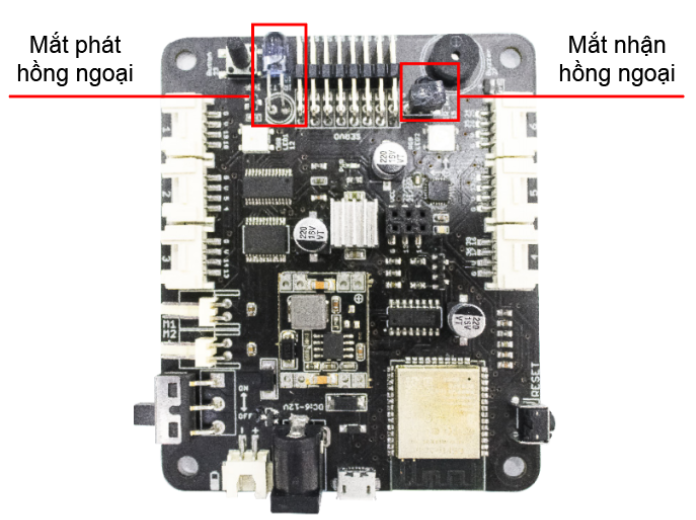
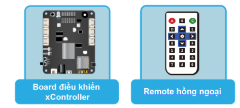

Bài học 12: Remote hồng ngoại
Mục tiêu
Tìm hiểu về tín hiệu hồng ngoại và remote điều khiển từ xa bằng hồng ngoại đi kèm. Viết chương trình để thay đổi màu sắc đèn LED RGB trên board bằng remote.
Kiến thức mới
Chắc hẳn là bạn cũng đã sử dụng remote hồng ngoại để điều khiển TV, quạt, máy lạnh,…. đúng không nào? Các remote này đều sử dụng tín hiệu hồng ngoại (Infrared, gọi tắt là IR), được hiểu là 1 chùm sóng ánh sáng không thể nhìn thấy bằng mắt thường. Do đó, bạn không thể thấy ánh sáng phát ra khi nhìn vào đèn LED hồng ngoại nhỏ ở đầu của remote.
{kind=link}
Trên remote có 1 hoặc nhiều LED hồng ngoại được sử dụng để truyền tín hiệu hồng ngoại. Tín hiệu này sẽ được nhận bởi 1 bộ thu hồng ngoại đặc biệt và chuyển thành dạng xung điện, sau đó, các xung điện này được chuyển đổi thành dữ liệu được sử dụng cho các thiết bị điện tử.
Nếu bạn tò mò muốn biết ánh sáng hồng ngoại như thế nào, hãy nhấn 1 nút bất kỳ trên remote rồi nhìn vào đèn LED ở đầu remote thông qua 1 chiếc camera nhé!
{kind=link}
Board xController được tích hợp sẵn 2 đèn LED hồng ngoại, một LED thu và một LED phát. Bộ xBuild Creator Kit cũng đi kèm một remote hồng ngoại để chúng ta thực hành.
{kind=link}
Thiết bị cần sử dụng
{kind=link}
Viết chương trình
Mở phần mềm Arduino IDE.
Copy đoạn code sau, click vào nút Verify để kiểm tra lỗi chương trình. Sau khi biên dịch không báo lỗi, bạn có thể nạp đoạn code vào board.
#include <IRremote.h>
XController xcon;
IRrecv irrecv(IR_RX);
int irCommand;
void setup()
{
IrReceiver.begin();
Serial.begin(9600);
}
void loop() {
if (irrecv.decode()) {
irCommand = irrecv.decodedIRData.command;
Serial.println(irCommand);
irrecv.resume();
if (irCommand == IR_REMOTE_A){
xcon.showLED(0, 255, 0, 0);
} else if (irCommand == IR_REMOTE_B){
xcon.showLED(0, 0, 255, 0);
} else if (irCommand == IR_REMOTE_C){
xcon.showLED(0, 0, 0, 255);
} else if (irCommand == IR_REMOTE_D){
xcon.showLED(0, 255, 255, 255);
} else {
xcon.showLED(0, 0, 0, 0);
}
}
}
Giải thích chương trình
Chương trình trên sẽ liên tục đọc tín hiệu IR (nếu có) và giải mãi. Nếu tín hiệu giải mã trùng với các phím A, B, C hoặc D trên remote hồng ngoại đi kèm, đèn LED RGB sẽ đổi màu tương ứng. Nếu tín hiệu nhận được không phải 1 trong 4 phím đó thì đèn LED sẽ tắt.
#include <IRremote.h>
Khai báo sử dụng thư viện để làm việc với remote IR.
IRrecv irrecv(IR_RX);
Khai báo đối tượng để thu và xử lý tín hiệu IR cùng với chân IO nối với đèn LED thu IR. IR_RX là số chân IO đã được định nghĩa sẵn trong cài đặt của board xController.
irrecv.begin();
Khởi tạo và bắt đầu xử lý tín hiệu IR.
if (irrecv.decode()) {
Hàm decode() sẽ giải mã tín hiệu nhận được. Nếu có tín hiệu nhận được và giải mã thành công thì hàm này sẽ trả về true. Do đó, ta kiểm tra bằng câu lệnh if và đưa ra các lệnh xử lý tương ứng.
Đọc giá trị tín hiệu đã được giải mã và in ra cửa sổ Serial. Đồng thời, chạy lại chức năng thu tín hiệu bằng hàm resume().
if (irCommand == IR_REMOTE_A){
xcon.showLED(0, 255, 0, 0);
}
Kiểm tra: Nếu tín hiệu trùng với phím A trên remote thì đổi màu đèn LED RGB thành màu đỏ. IR_REMOTE_A là giá trị tín hiệu của phím A trên remote đi kèm bộ kit (đã được khai báo trong thư viện IRRemote).
Kiểm tra tương tự với các phím B, C và D bằng đoạn code bên dưới.
Sau khi chạy chương trình, bạn thử hướng remote về phía board và nhấn các phím A, B, C, D. Bạn sẽ thấy màu LED thay đổi theo như logic trong chương trình.